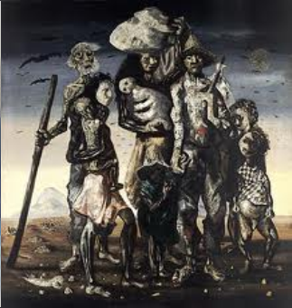
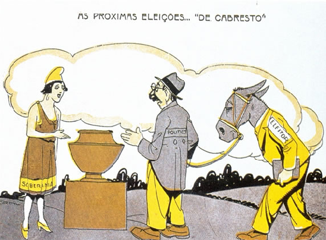

1. Os Sertões, de Euclides da Cunha.
Euclides da Cunha nasceu em 1866. Começou sua vida profissional no Exército. Mas acabou desligado por indisciplina, ou melhor, por tendências republicanas. Mudou-se para São Paulo, onde iniciou a carreira de jornalista. Foi como colaborador do jornal O Estado de São Paulo que chegou a Canudos, para mostrar aos seus leitores o que acontecia no interior do Nordeste. Como muitos, achava que encontraria um grupo de fanáticos religiosos e monarquistas. Não demorou a mudar de opinião. Daquilo que observou escreveu Os Sertões, livro publicado em 1902 e hoje considerado uma das principais obras da literatura brasileira. Leia um trecho do livro:
O sertanejo é antes de tudo um forte. Não tem o raquitismo exaustivo dos mestiços neurastênicos do litoral.
A sua aparência, entretanto, ao primeiro lance de vista, revela o contrário. [...]
É desgracioso, desengonçado, torto. [...] O andar sem firmeza, sem aprumo, quase gigante e sinuoso, aparenta a translação de membros desarticulados. [...] A pé, quando parado, recosta-se invariavelmente no primeiro umbral ou parede que encontra [...] E se na marcha estaca pelo motivo mais vulgar [...], cai logo – cai é o termo – de cócoras, atravessando longo tempo numa posição de equilíbrio instável [...], com uma simplicidade a um tempo ridícula e adorável.
É o homem permanentemente fatigado.
a) Como o autor descreve o sertanejo?
b) Observe a reprodução abaixo do quadro “Retirantes”, de Cândido Portinari. Compare o texto de Euclides da Cunha com o quadro. Quais as semelhanças entre os dois?

c) Escreva um parágrafo refletindo sobre as condições atuais do sertanejo em comparação com a situação do sertanejo no período da Primeira República no Brasil.
2. As crianças de Canudos
Ao final da Guerra de Canudos foi criado o Comitê Patriótico da Bahia, que tinha o objetivo de prestar auxílio aos soldados que haviam participado do conflito. Mais tarde, os membros do Comitê também passaram a amparar os sertanejos, principalmente às crianças. O texto a seguir mostra o cenário devastado de Canudos e a realidade trágica das crianças que sobreviveram à guerra.
Crianças órfãs
"Em setembro de 1897, o jornalista Lélis Piedade, secretário do Comitê [Patriótico da Bahia], viajara até o cenário do conflito [...]. Na visita, deparou-se com a paisagem desolada do sertão: casas abandonadas e saqueadas. Conversou com militares, padres, sertanejos, jagunços conselheiristas feitos prisioneiros, mulheres e crianças. [...] O secretário do Comitê presenciou também a prática de venda de crianças sertanejas, efetivamente órfãs ou separadas de suas famílias. [...]
O Comitê organizou uma comissão para localizar e recolher os menores e as mulheres da região. O trabalho teve início com os oficiais do exército, aos quais o Comitê solicitou que desenvolvessem as crianças que se encontravam em seu poder para que pudessem ser encaminhadas aos orfanatos ou restituídas às suas famílias. [...]
No entanto, diversas dessas crianças, apesar de localizadas, não foram devolvidas nem adotadas legalmente, pois já haviam sido convertidas em mão de obra para serviços domésticos. Outras foram simplesmente ocultadas ou enviadas para outros pontos do estado por seus patrões e donos, que tinham medo de perdê-las.”
MONTEIRO, Vanessa Sattamini Varão. Órfãos do ódio. Revista de História da Biblioteca Nacional, n. 1, jul. 2005. Disponível em www.revistadehistoria.com.br. Acesso em 9 jan. 2012.
a) Por que o Comitê Patriótico da Bahia passou a amparar os sertanejos de Canudos?
b) Qual era a realidade das crianças de Canudos depois da destruição do arraial?
c) Segundo o relato, muitas crianças órfãs de Canudos não foram devolvidas, pois já tinham sido aproveitadas como mão de obra. Situações como essa ainda existem no Brasil? O que deve ser feito caso alguém tenha conhecimento de crianças vivendo nessa situação?
d) Segundo o relato, muitas crianças órfãs de Canudos não foram devolvidas, pois já tinham sido aproveitadas como mão de obra. Situações como essa ainda existem no Brasil? O que deve ser feito caso alguém tenha conhecimento de crianças vivendo nessa situação?
3. Embora a origem da palavra república (do latim res = coisa; pública = do povo) designe uma forma de governo em função da “coisa pública, do bem comum”, nota-se no texto abaixo, que explica parte da 1ª Constituição Republicana, a baixa participação popular e a coação através do voto aberto:
Cidadania e direito de voto: os assuntos eleitorais não mudaram radicalmente do Império para a República. O voto foi garantido aos homens brasileiros maiores de 21 anos, ficando proibido a mulheres, mendigos, soldados e membros de ordens religiosas. Como resultado, na primeira eleição direta para a escolha do presidente da República, em 1894, votaram pouco mais de 2% dos brasileiros. Pelo sistema eleitoral da época, o voto era aberto, ou seja, os eleitores eram obrigados a revelar em que candidato estavam votando. Isso permitia aos grandes fazendeiros e líderes locais pressionar os eleitores na hora da votação.
a. É possível associar a charge abaixo com alguma característica do sistema eleitoral descrito no texto acima? Por quê?
b. Aponte semelhanças e diferenças entre o sistema eleitoral descrito no texto e o atual sistema eleitoral brasileiro.

Charge de Storni para a revista Careta (1927).
4.
No Rio de Janeiro, a capital do país, havia uma vasta população que vivia ao largo das instituições da República. Em contrapartida, como maior centro cosmopolita do país, o Rio de Janeiro não contava com uma estrutura urbana à altura de sua importância política e econômica, com muitos problemas: instalações portuárias antigas, ruas estreitas que dificultavam a circulação de pessoas e mercadorias, problemas de habitação, falta de saneamento básico, além de epidemias de variola, tifo e febre amarela.
O medo das constantes epidemias e das frequentes agitações da população pobre, em sua maioria negros e mestiços, afastava os investidores europeus. Para solucionar esses problemas, a elite da República investiu pesadamente na remodelação da cidade, expulsando boa parte da população pobre para os morros circulantes.
Rodrigues Alves, presidente da República entre 1902 e 1906, implementou então um projeto de reurbanização da capital. A ordem era limpar o Rio de Janeiro dos velhos hábitos e remodelá-lo segundo os padrões europeus.
Os cortiços populares foram derrubados para dar lugar a largas avenidas, jardins e praças ou a vistosos palacetes. A elite republicana esforçava-se em imitar a França, considerada por ela o modelo de civilização. A reurbanização do Rio de Janeiro piorou as condições de vida da população pobre. Não lhes restou alternativa senão construir casebres nos morros que circundavam a capital. Nascia assim as imensas favelas que até hoje marcam a paisagem carioca.
A expulsão geográfica coroava a marginalização política. A República oligárquica empenhara-se desde o início em afastar do centro de decisões o que considerava ser um bando de agitadores e ignorantes. Agora a população pobre era retirada do convívio urbano da região nobre da capital, tendo bloqueada de vez qualquer possibilidade de participação na vida política institucional.
a) Por que o presidente Rodrigues Alves empenhou-se na reurbanização do Rio de Janeiro?
b) Quais as consequencias da reurbanização para a população pobre do Rio de Janeiro?
c) Explique a origem das favelas no Rio de Janeiro.